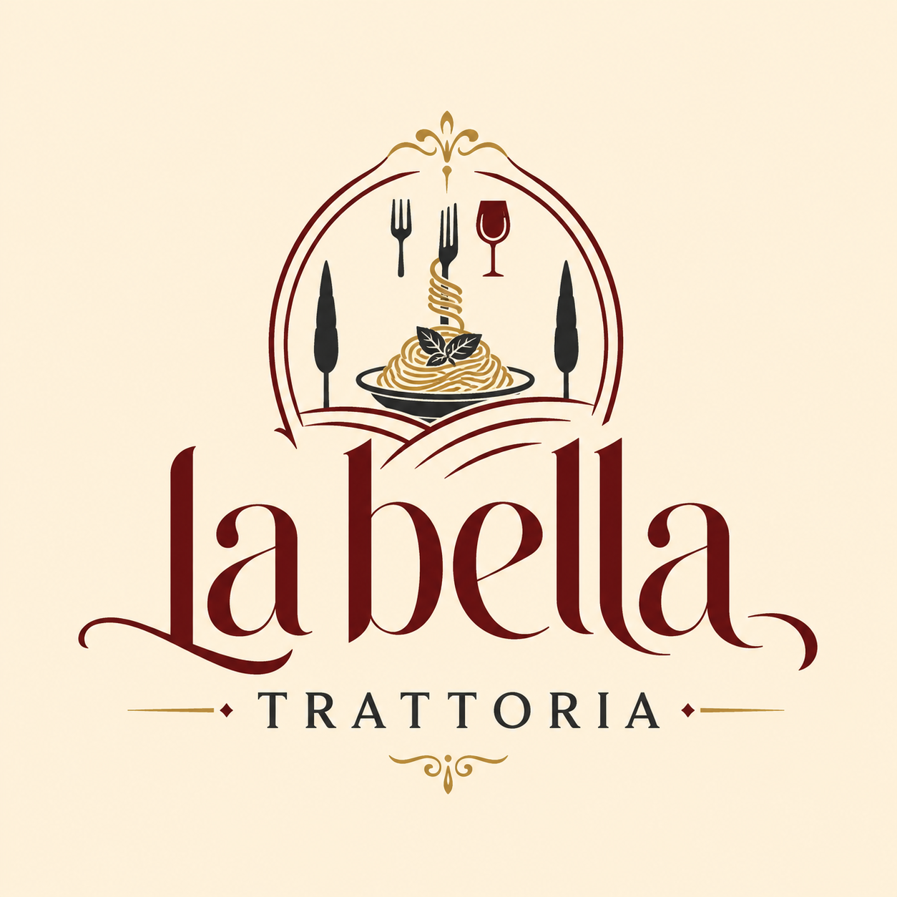
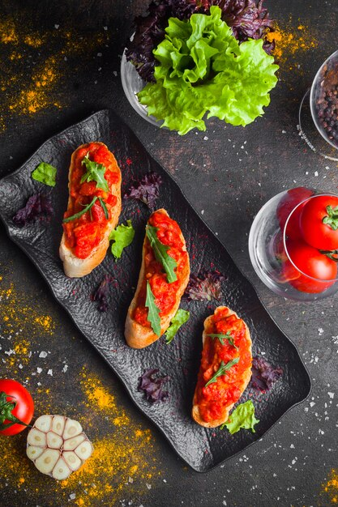
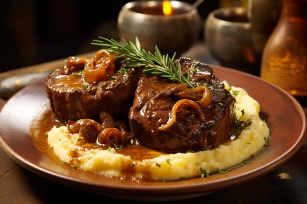
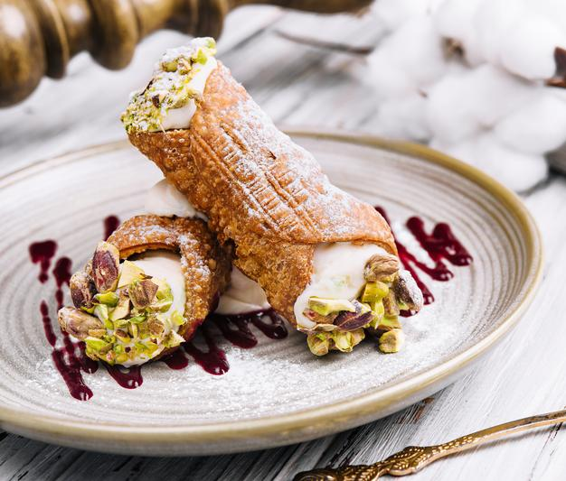
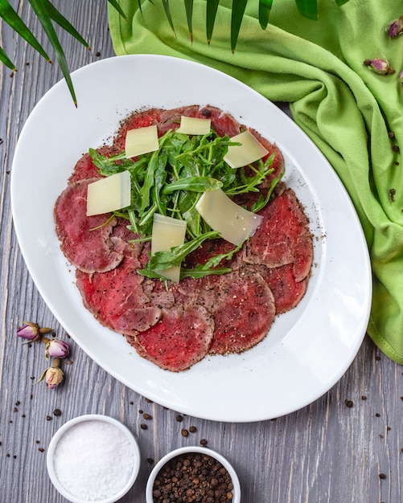
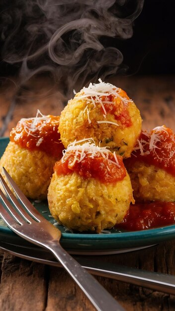
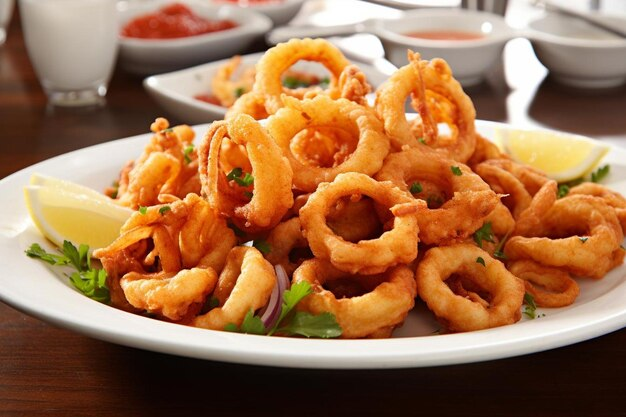
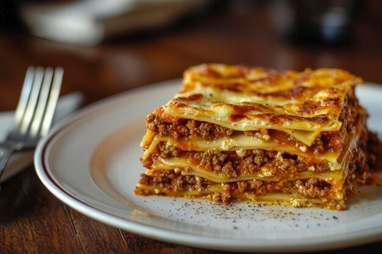

Bruschetta al Pomodoro
Fatias de pão italiano artesanal tostadas na grelha, levemente esfregadas com alho fresco e cobertas com cubos de tomates maduros, manjericão e azeite de oliva extravirgem. Quantidade: 3 unidades (aprox. 150g)

A La Bella Trattoria nasce da essência da verdadeira gastronomia italiana, reunindo tradição, elegância e autenticidade em uma experiência cuidadosamente elaborada. Inspirada nas clássicas trattorias da Itália, nossa casa valoriza receitas artesanais, ingredientes selecionados e a excelência em cada detalhe, oferecendo um menu refinado composto por massas frescas, risotos cremosos, carnes especiais e sobremesas tradicionais preparadas com técnicas que homenageiam a alta cucina italiana. Em um ambiente acolhedor e sofisticado, a La Bella Trattoria proporciona momentos memoráveis à mesa, traduzindo em cada prato o equilíbrio perfeito entre sofisticação e simplicidade — dalla tradizione, con cura.






Fatias de pão italiano artesanal tostadas na grelha, levemente esfregadas com alho fresco e cobertas com cubos de tomates maduros, manjericão e azeite de oliva extravirgem. Quantidade: 3 unidades (aprox. 150g)
Salada clássica com rodilhas intercaladas de tomate caqui maduro e muçarela de búfala fresca, finalizada com folhas de manjericão gigante, azeite extravirgem e flor de sal. Quantidade: Porção de (aprox. 200g)

Lâminas finíssimas de filé mignon bovino curado, servidas com molho leve de mostarda em grãos, alcaparras inteiras, rúcula selvagem e lascas de queijo parmigiano-reggiano. Quantidade: (Aprox. 120g)

Bolinhos sicilianos de risoto de açafrão empanados na farinha panko e fritos, recheados com um coração cremoso de muçarela que derrete ao corte. Quantidade: 4 unidades (aprox. 200g no total)

Anéis de lula frescos, passados rapidamente na farinha de sêmola e fritos até ficarem crocantes e dourados. Acompanha gomos de limão siciliano. Quantidade: (aprox. 180g)

Massa longa de grano duro envolvida em uma emulsão aveludada de gemas de ovos caipiras, queijo pecorino romano autêntico e tiras crocantes de guanciale, finalizada com pimenta-do-reino moída na hora. Servido na travessa. Quantidade: (Aprox. 700g)

Camadas intercaladas de massa fresca aos ovos, ragu bolonhês bovino e suíno cozido lentamente por 6 horas, molho bechamel cremoso com toque de noz-moscada e crosta gratinada de parmesão. Quantidade: (Aprox. 850g)

Risoto cremoso de arroz arbóreo preparado com caldo de vegetais artesanal e cogumelos porcini italianos hidratados, finalizado com manteiga gelada e queijo parmigiano-reggiano. Quantidade: (Aprox. 700g)
Duas peças inteiras de ossobuco bovino cozidas lentamente em baixa temperatura com vegetais e caldo de carne, cobertas com *gremolata* fresca (salsa, alho e raspas de limão siciliano). Quantidade: 2 peças de ossobuco com molho (Aprox. 650g)
Duas costeletas de carne suína ou vitela batidas finas, passadas em ovos frescos e farinha de pão artesanal, fritas na manteiga clarificada até obter uma casca uniformemente crocante. Quantidade: 2 unidades grandes (Aprox. 450g)

Batatas rústicas cortadas em gomos e assadas com dentes de alho inteiros, alecrim fresco e azeite de oliva até dourarem. Quantidade: (Aprox. 200g)
Polenta de sêmola de milho amarela cozida lentamente, bem cremosa, finalizada com manteiga e queijo parmesão. Quantidade: (Aprox. 180g)
Guisado agridoce clássico feito com berinjela, pimentões, cebola e tomate, enriquecido com alcaparras, azeitonas verdes e um toque de vinagre balsâmico.Quantidade: (Aprox. 150g)

Seleção de vegetais grelhados na chapa (abobrinha, berinjela e pimentões), temperados com azeite de ervas finas e alho. Quantidade: (Aprox. 180g)

Feijões brancos cozidos em fogo brando com molho de tomates pelados, alho, azeite e folhas de sálvia fresca. Quantidade: (Aprox. 180g)
Camadas de biscoito savoiardi perfeitamente embebidos em café expresso forte, intercaladas com creme denso de queijo mascarpone e ovos, polvilhadas com cacau em pó 100%. Quantidade: (Aprox. 130g)

Sobremesa piemontesa à base de creme de leite fresco cozido com fava de baunilha, de textura levemente gelificada, servida com calda artesanal de frutas vermelhas. Quantidade: 1 unidade (Aprox. 110g)
Tubos de massa frita crocante aromatizada, recheados com creme doce de ricota, gotas de chocolate meio amargo e finalizados com pistache picado nas bordas. Quantidade: 2 unidades médias (Aprox. 120g no total)

Torta clássica de massa frola italiana recheada com um delicado creme de confeiteiro com sutil toque de limão siciliano, coberta com pinoles tostados.Quantidade: 1 Fatia (Aprox. 120g)

Duas bolas de sorvete artesanal italiano de textura densa e cremosa. Sabores tradicionais à escolha: Pistache da Sicília ou Stracciatella (creme com pedaços de chocolate). Quantidade: 2 bolas (aprox. 140g no total)
Instagram: @la_bella-trattoria
WhatsApp: (11) 99874-2156
Telefone: (11) 4128-7634
E-mail: contato@labellatrattoria.com.br
Terça a Quinta — 18h às 23h
Sexta e Sábado — 18h às 00h
Domingo — 12h às 16h | 18h às 22h
Fechado às Segundas-feiras.
Avenida Kazumi Yoshimura, 430, Distrito Industrial - Vila Isabel, Itapeva - SP, 18410-480